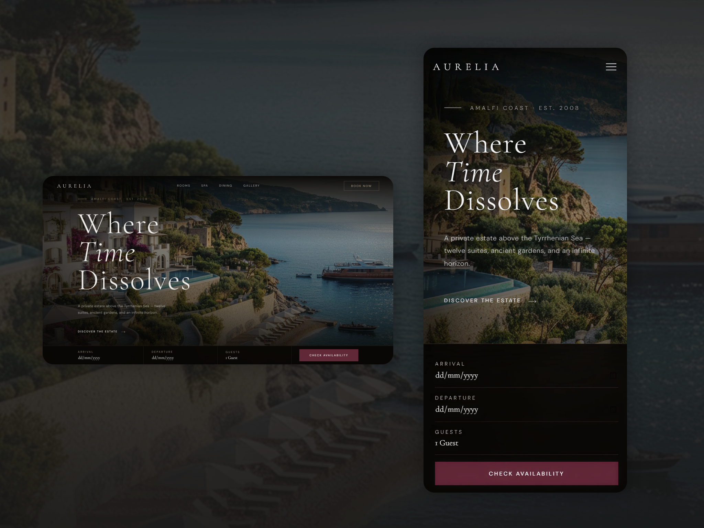
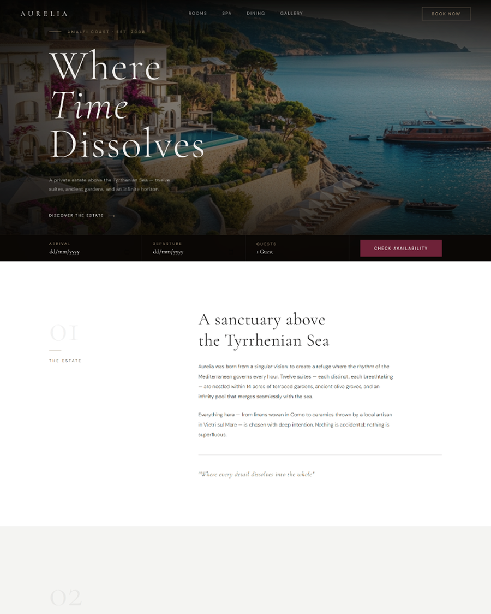
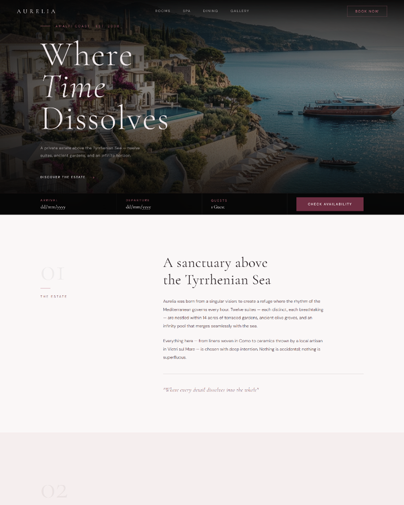
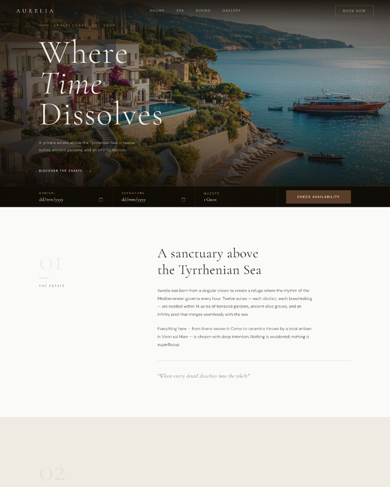
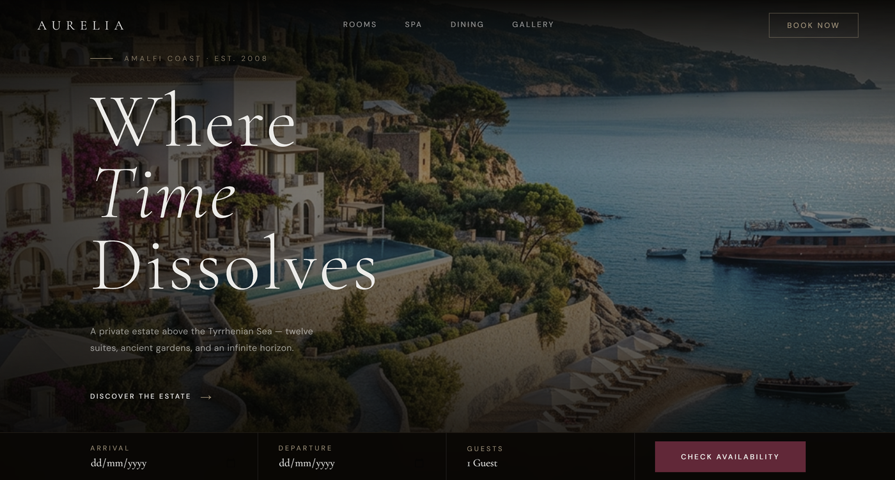
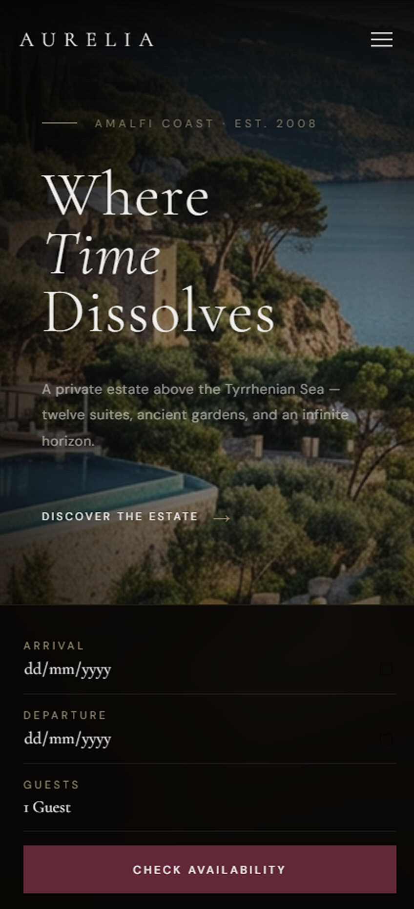
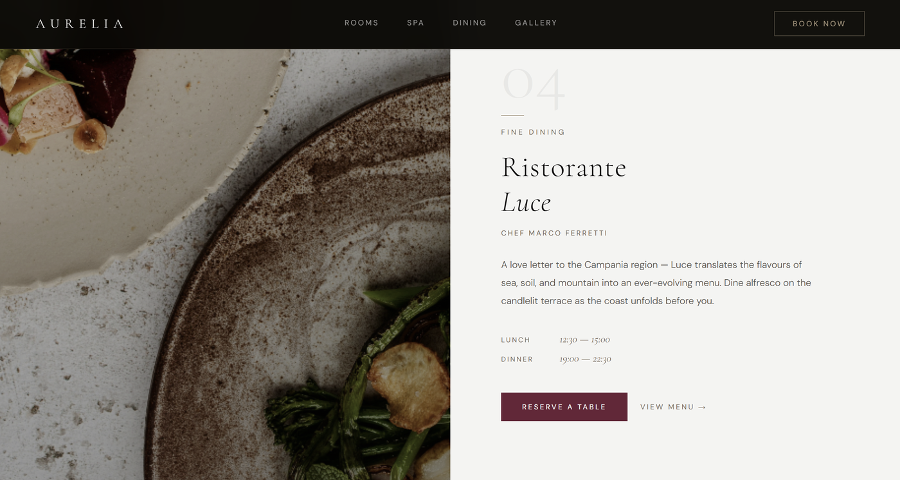
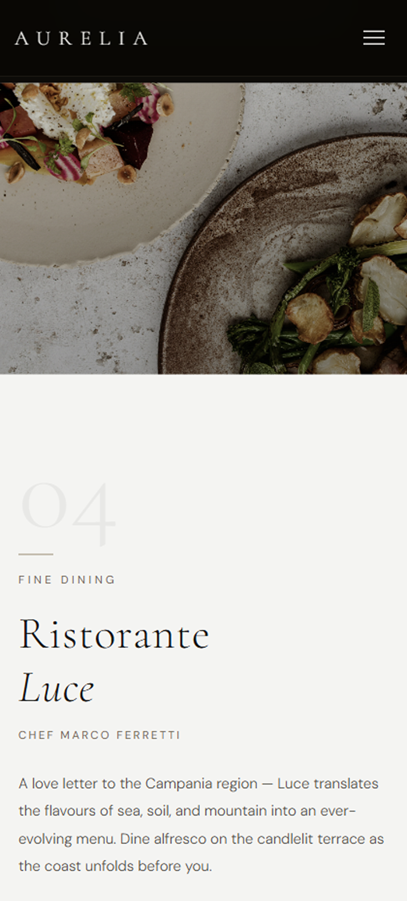

A site for a small hotel with its own restaurant, spa, and resort options. Designed and built end to end — from the first call, to a direction we agreed on, to three finished color versions the client could open and preview live.

The client wanted a site that felt genuinely high-end — a private estate on the Amalfi Coast, with rooms, a fine-dining restaurant, a spa, and the full range of resort options — without the coldness that "luxury" sites often fall into. Refined, but inviting. And rather than flat mockups, they wanted real, clickable previews to choose from.
As the last step, the client was presented with three color directions, each as a clickable live preview rather than a static image. This is what I usually send before building the full site: a real page they can move through to feel the look before committing. Open any of the three below.

A deep wine-red accent over warm dark tones — the most classic and richest of the three.
Open live preview 🡥
A soft, dusty rose with blush-tinted sections — the warmest and most welcoming option.
Open live preview 🡥
A warm bronze accent over sandstone neutrals — earthy, quiet, and understated.
Open live preview 🡥Note: these are live previews, not the final website — they're what goes to the client to check the look and feel before the full build begins.
Every direction was built to hold up on both desktop and phone — the same warmth and hierarchy carried across screens. Here's the hero and the restaurant, shown on each.




We start with a call. From there I land on a few directions you can click through and feel out — three of them, so you can see what fits before anything's built. It's not endless rounds of changes; it's a clear way to find the look you actually want.
If you have photos and copy, send them over — it gives me a better sense of how the finished site will look. But it's genuinely nice-to-have, not something I need to start.
If you don't have it ready, no worries at all. I'll make photos with AI or find something online to build with, and we swap them for the real thing before the project's handed over.
I'll walk you through the small stuff — editing text, swapping images, the day-to-day. And if you'd rather not touch it, we can talk maintenance: send things my way and I'll handle the updates.